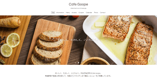
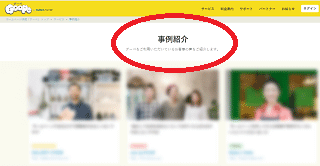
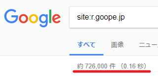
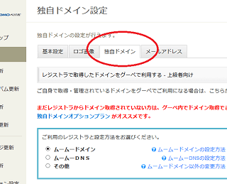
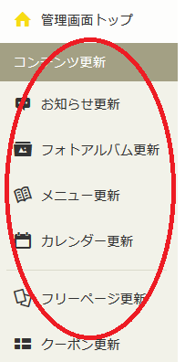
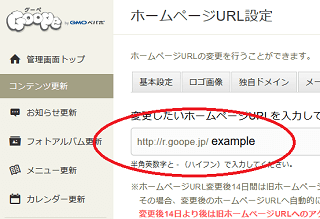
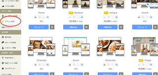
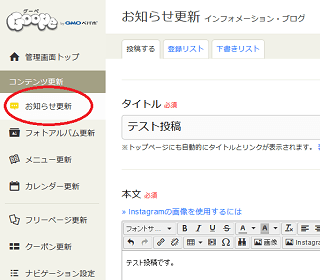
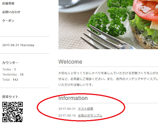

お店のホームページ作成に最適なグーペ
グーペは、飲食店などのお店のホームページを自分で作成するのに最適なサービスです。
人気レンタルサーバー「ロリポップ」で有名なGMOペパボ株式会社（※東証一部：3633）が運営しているため、安心して利用することができます。
初期費用で3,300円（税込）かかりますが、月換算1,100円（税込）でお店のホームページを自分で簡単に作ることができます。とりあえずでもお店のホームページを持ちたい方は、こちらのグーペを試してみるとよいでしょう。
■公式サイト
→ グーペ
【お店の例；】居酒屋、洋食料理店、和食料理店、カフェ、美容室、花屋、教室、エステ、ネイルサロン、インテリアショップ、クリニック、カレー専門店、旅館、整体、税理士事務所、会社案内など

グーペでは、無料テンプレートや問合わせフォーム、地図など、自分で簡単にお店のホームページを作成するためのツールが充実しています。HTMLやCSSの知識も必要ないため、初めての方でも簡単に作ることができます。
ただし、ショッピングカート機能はないため、ネット上で商品を販売するネットショップには向いていないかもしれません。
- 実店舗のある飲食店などの公式サイト → ◎（※法人、個人事業主など）
- 会社や事業案内のための公式サイト → ◎（※法人、個人事業主など）
- 趣味のための個人のホームページ → 〇（※個人サイトでも可）
- ネットショップ → ×（※同社のカラーミーがおすすめ）
ネット通販ではなく、実店舗のあるお店のメニューや地図、営業時間などをご案内するための公式ホームページとしての用途がおすすめです。
グーペでの実際の作成事例
どのようなお店が実際に利用しているのかについては、公式サイトの「サービス - 事例紹介」の箇所で紹介されていますので、チェックされてみるとよいでしょう。

そのほか、ここでは個別のお店のホームページのご紹介は省略しますが、グーグルで「site:r.goope.jp」と検索するとグーペで作成しているサイトが多数ヒットします。

さらに、自分の「お店の業種のキーワード」を追加して絞り込むと、どのようなサイトが出来上がるのかをイメージしやすいかもしれません。
例えば、「site:r.goope.jp 美容室」としたり、あるいは「site:r.goope.jp カフェ」、「site:r.goope.jp クリニック」などで検索しなおしてみるとよいでしょう。概ね、デフォルトの無料テンプレートをそのまま使用しているケースが多いようです。
お店ホームページには「ライト」プランがおすすめ
グーペに申し込みをすれば、ホームページを自分で作るための必要なツールはすべて揃っているため、別途にレンタルサーバーを用意したり、ホームページ作成ソフトを購入したりする必要はありません。
お店を経営している方の場合、1番人気の「ライト」プランがおすすめです。
■グーペの利用料金
- エコノミー（※個人の趣味サイトにおすすめ）
1か月 1,100円 - ライト（※お店を経営している方におすすめ）
1か月 1,650円（12か月契約は1,100円/月となりお得！） - スタンダード（※中規模ビジネスに最適）
1か月 3,850円
■デフォルトでのサイトのURLについて
デフォルトでのURLはグーペから提供される「http://r.goope.jp/ユーザーID」となっているため、グーペのサブドメイン（r.goope.jp）での作成となります。
一方、独自ドメインを取得した場合、その取得したドメイン名でのURLを使用できます。
例えば、「example.com」のドメインを取得した場合、このようなURLになります。
http://example.com
（wwwあり、なしの両方でアクセス可）
お問合せなどでメールを使用する際、独自ドメインでのメールアドレスを使用した方がよいため、できるだけお店専用で使うドメインを別途に取得して設定されるとよいでしょう。
独自ドメインの詳細については、こちらのページをご参照ください。
→ 独自ドメインとは何ですか？
グーペの独自ドメイン名オプションとは？
グーペで独自ドメインを利用する場合、オプション費用として月額330円～利用できます。初心者の方はグーペでオプション契約すると簡単かもしれません。
ただし、ヘルプページには「グーペでのご利用に限定しており、他のサービスでご利用いただくことができません。」との記載があるため、のちのちお店の規模が大きくなってきた際、ドメインの権利関係で問題が生じる可能性があります。
例えば、いずれお店のホームページを本格的にリニューアルして管理を他の業者に依頼する形になった際など、この内容を読む限り、グーペで取得したお店のドメイン名を使えなくなってしまう可能性があります。
そのため、独自ドメインについてはグーペでは取得せず、同社のムームードメインなどで取得してグーペに設定されることをおすすめします。
- グーペで取得（※ドメインの権利関係に注意）
- 他で自分で取得（※ムームードメインやバリュードメインなど。）
独自ドメインはどこの会社で取得してもかまいませんが、ムームードメインはグーペと同じ会社のため、そちらで取得すると設定は簡単かもしれません。
→ 独自ドメインの取得方法
このドメインを自分で取得する際の費用については、たいていは年間で1,300円ちょっと、月換算で100円程度となります。

グーペ契約後のホームページの設定方法
管理画面のサイドバーに各種の設定メニューが表示されてますので、契約後はそちらから設定していくとよいでしょう。

テンプレートなどは後からでも変更できますが、URLについては後から変更してしまうとリンク切れなどが発生してしまうため、一番最初に慎重に決めておくことをおすすめします。
■ホームページのURLの設定
もし独自ドメインを使用せず、デフォルトで提供されるURLを利用する場合でも、できるだけ「ユーザーIDの部分」を「お店に関連のある文字列」に変更しておくことをおすすめします。
「http://r.goope.jp/ユーザーID」
→「http://r.goope.jp/お店に関連した文字列」
例えば、もしお店の名前が「GMO」なら、「http://r.goope.jp/gmo」とかそんな感じです。

また、お店のロゴを作成している場合、サイト上に画像をアップロードしてから設定するとよいでしょう。
■テンプレートの設定
テンプレートはデザイン変更の箇所から設定することができます。

無料テンプレートが充実してますが、有料テンプレートも使用することができます。有料テンプレートを使用する場合は別途に料金がかかるものの、費用は初回のみです。
スマホにも対応していますので、実際にお手持ちのスマホでアクセスしてチェックしてみることをおすすめします。
■お知らせ情報の更新
また、お店でのキャンペーン情報や新メニューの最新情報をホームページ上で定期的に更新していくとよいでしょう。「お知らせ更新」の箇所からブログ感覚で更新できるため、HTMLやCSSの知識は特に必要ありません。

更新すれば、サイト上に実際に反映されます。

そのほか、地図やお問合せの設定などがありますが、マニュアルやサポートが充実していますので、そちらの方を参考に作り込んでいくことをおすすめします。
個人向け格安レンタルサーバー
- エックスサーバー （高機能・人気・おすすめ・無料SSL）
- さくらインターネット （格安・人気・老舗・無料SSL）
- お名前.comサーバー （GMOグループ・人気・無料SSL）
- ロリポップ！ （初心者向け・人気・格安・無料SSL）
- コアサーバー （高機能・上級者向け・無料SSL）
- ヘテムル （無料SSL）
- スターサーバー （格安・無料SSL）
- XREA （格安・老舗・無料SSL）
- グーペ （お店向け・無料SSL）
- ConoHa WING（コノハ ウィング） （高速・無料SSL）
- mixhost （LiteSpeed・成人向け可・無料SSL）
- カラフルボックス （LiteSpeed・cPanel・無料SSL）
- WebARENA（ウェブアリーナ） （格安・老舗・無料SSL）
- Z.comレンタルサーバー （高速・格安SSL）
- リトルサーバー （格安・無料SSL）
- ABLENET（エイブルネット） （格安・老舗）
- エクストリム （格安・無料SSL）
- JSNレンタルサーバー （格安・老舗・無料SSL）
- Fc2 lite （格安・無料SSL）
- マイサーバー1000 （無料SSL）
- クイッカ （IP分散・cPanel）
- ドメインキング （Plesk）
- ＠ＷＡＰＰＹ （格安・Plesk）
- ハッスル （格安）